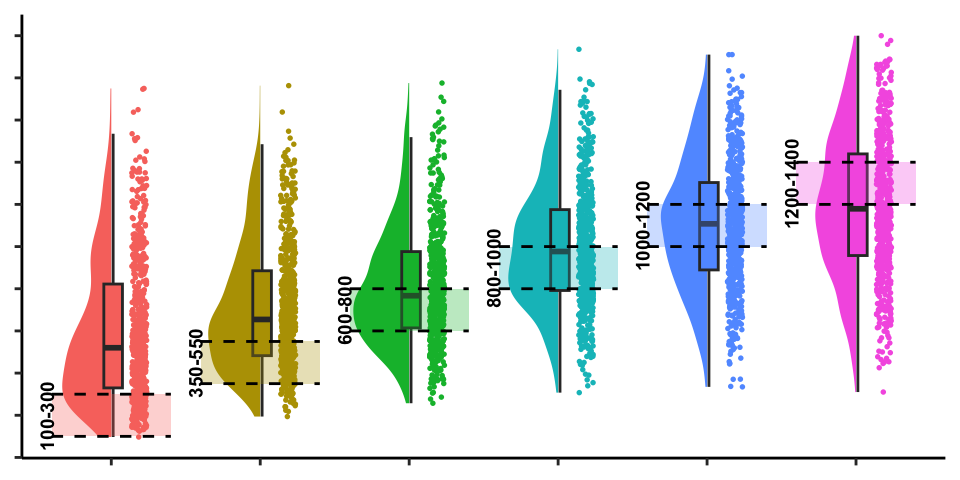

Projects
Variability and Visuomotor Learning
In Project 1, I programmed a simple projectile launching task to serve as a conceptual replication of an influential paradigm in the visuomotor skill learning literature. Several of the canonical empirical patterns are replicated, with the varied trained participants tending to perform better during testing in both experiments. A major issue with previous research in the cross-disciplinary “benefits of variability” literature is that many previous works do not adequately control for the similarity between training and testing conditions. Such issues arise when both from failures to consider the possibility of non-linear generalization, and from often the unquestioned assumption that participants are acquiring, and then generalizing from prototype or schema-based representations. I introduce a theoretically motivated method of explicitly quantifying the similarity between training experience and testing condition. The resulting similarity quantity can then be used to explicitly control for similarity (by adding it as a covariate to the statistical model). The effect of variability remains significant while controlling for similarity, which I argue is a more rigorous demonstration of the effect of variability on testing performance than what is typically provided with standard methods. I conclude by introducing an extended version of the model that assumes training variation influences the steepness of the generalization gradient. With this flexible similarity mechanism, the group-level effect of variability can then be accounted for within the similarity-based generalization framework.
Variability and Extrapolation

In Project 2, a modified version of the task from Project 1 is used in conjunction with a testing procedure that challenges participants to extrapolate well beyond their training experience. In line with previous research in the function learning literature, participants show evidence of successful extrapolation in our linear task environment. Surprisingly though, the constant training group outperforms the varied training group consistently across numerous variants of the task. Such a pattern is far from unheard of in the vast literature on training variability, and it is therefore remains a worthwhile challenge to evaluate the ability of similarity-based models to account for the observed effects. Additionally, the cognitive process models implemented for project 2 will go beyond the modelling efforts of the previous project in two respects. 1) Extensions that enable the model to produce predictions of participant responses, and 2) fitting and attempting to account for behavior in both training AND testing phases of the experiment.
Variability in the Wild
For the third and final project, I will take advantage of a large dataset from Lost In Migration, a popular online game resembling the classic Eriksen flanker task. Due to randomization of game trials, some users experience much more variability in the early phases of the game than others. Additionally, the dataset provided by Lumos labs includes data from users who experienced a ‘high variability’ version of the game before being switched to the standard version. I will assess the influence of both variability-via-randomization, and variability-via-manipulation, and once again evaluate the ability of similarity-based-generalization models to account for the observed patterns. While the key theoretical questions, and general modeling approach will remain the same as the first two projects, the Lost In Migration’s dataset will present the opportunity to examine the influence of variability in a much more graded fashion, and to assess the ecological validity of the phenomena.